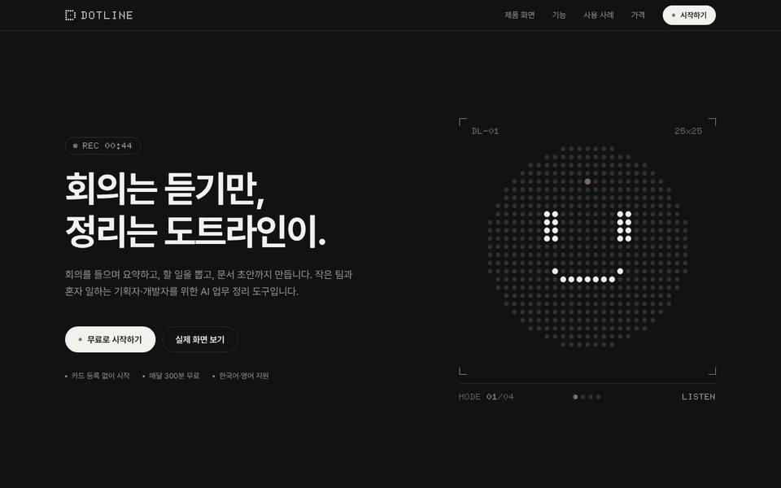
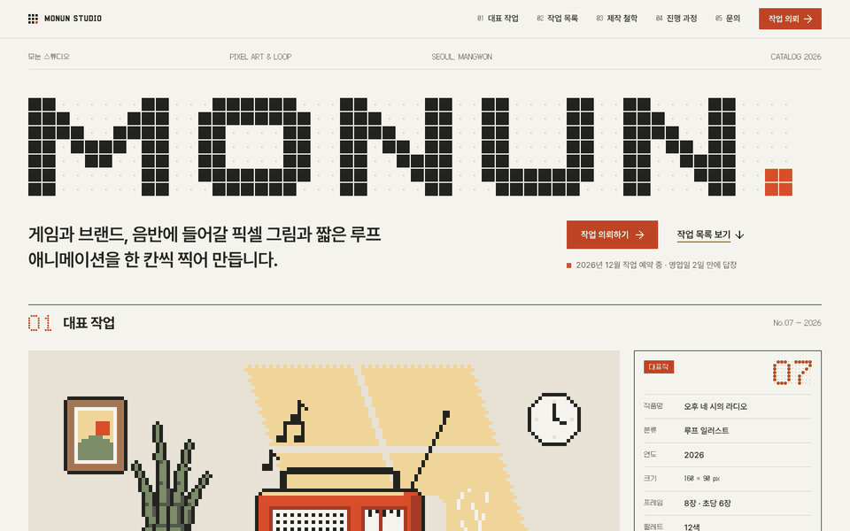
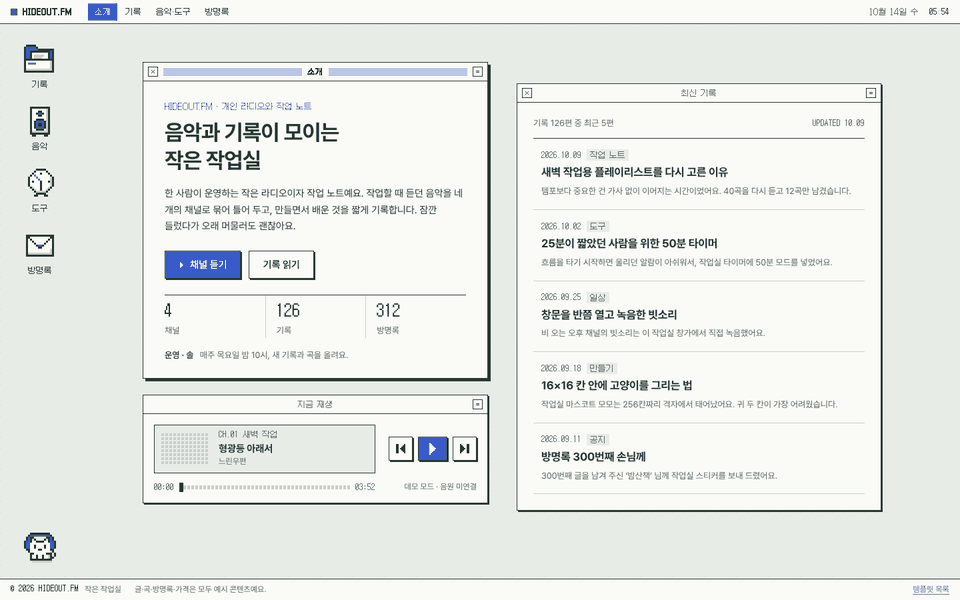
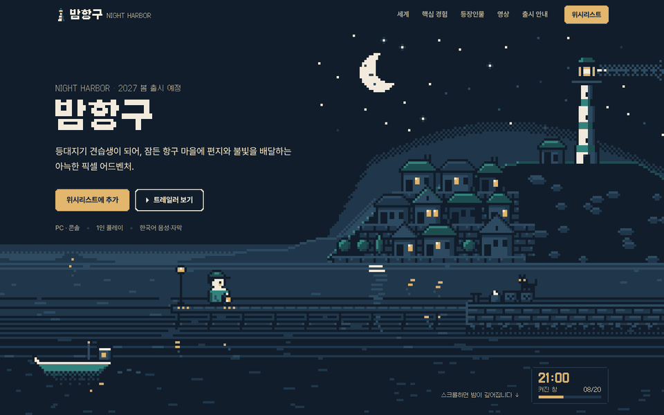
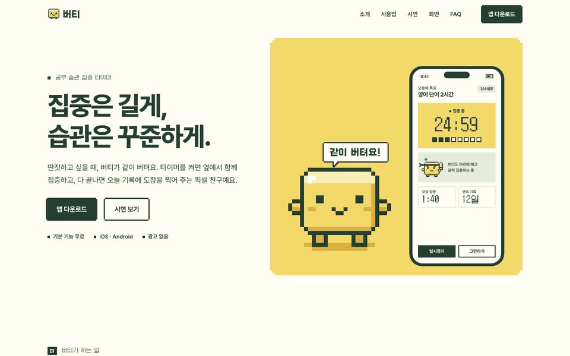

DOT TEMPLATES · 5
픽셀 아트와 도트 매트릭스를 각기 다른 방식으로 쓰는 홈페이지 템플릿입니다. 모든 도트 그래픽은 코드로 그린 임시 이미지라서 에셋 없이도 바로 열어볼 수 있고, 각 폴더의 assets/README.md에 교체할 에셋 규격을 정리해 두었습니다.
assets/README.md
검정 바탕에 도트 상징물 하나. 정돈된 테크 브랜드의 제품 홈페이지.

따뜻한 흰 바탕에 큰 타이포그래피와 픽셀 작품. 작품집 같은 스튜디오 홈페이지.

회녹색 바탕화면 위의 작은 작업실. 음악을 듣고 기록을 읽으며 머무는 공간.

짙은 남색과 창문 불빛의 픽셀 세계. 스크롤하며 들어가는 게임 홈페이지.

버터 옐로와 짙은 녹색, 큰 픽셀 마스코트. 귀엽고 명확한 앱 홈페이지.
